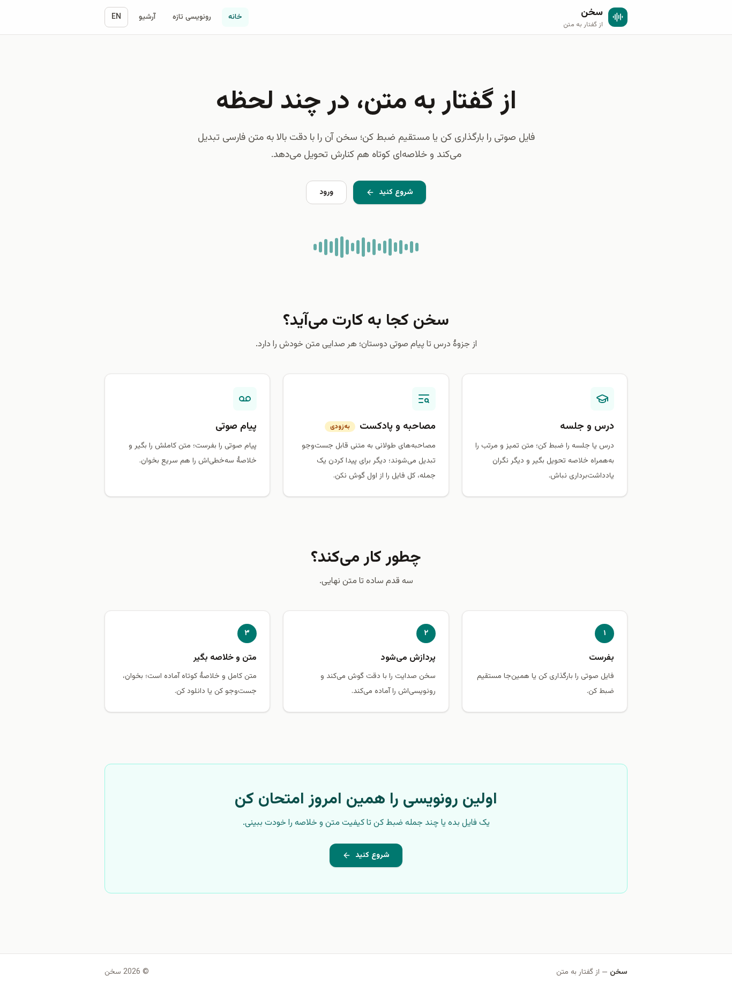
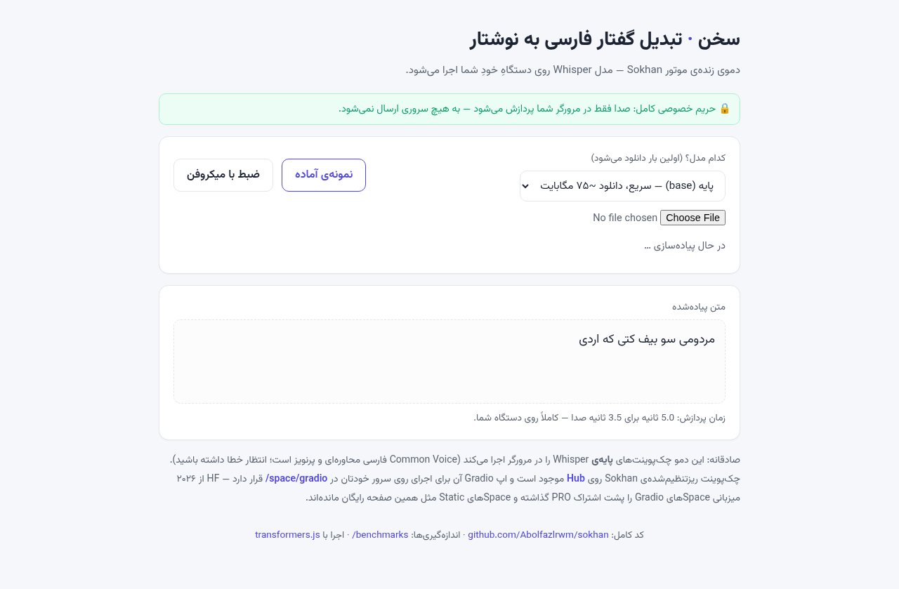

Source-available · free for noncommercial use · v1.5.0
گفتار فارسی، به متنِ دقیق —
روی سرورِ خودت
سخن یک کیت کامل تبدیل گفتار به متن است: سرویس FastAPI با موتور faster-whisper، صف پردازش Celery، داشبورد وب فارسیمحور (راستبهچپ) و ربات تلگرام. صدای فارسی بدهید، متن و خلاصه بگیرید — بدون هیچ سرویس ابری و بدون قیمتِ هر دقیقه.
Persian-first speech-to-text toolkit — self-hosted, measured, free for noncommercial use.
دموی فضای HF همهچیز را روی دستگاهِ شما اجرا میکند — هیچ صدایی آپلود نمیشود.
Features
هر چیزی که از یک محصولِ واقعی انتظار دارید
موتور رونویسی جریانی
صدا با PyAV بلاکبهبلاک خوانده میشود، در پنجرههای ۳۰ ثانیهای با همپوشانی ۱ ثانیه رونویسی و دوباره یکی میشود؛ حافظه با طول فایل رشد نمیکند.
نشانهگذاری خودکارِ فارسی
یک پسپردازشِ قاعدهمحور (بدون LLM) «؟» و «.» را میگذارد، فاصلهها را اصلاح میکند و علائم لاتین را به ،/؛/؟ فارسی نگاشت میکند — اعشار و ساعت دستنخورده میماند.
وبهوک امضاشده
در ساخت هر کاری callback_url بدهید تا پایان آن بهصورت رویداد JSON با امضای HMAC (X-Sokhan-Signature) به سرویس شما POST شود.
پرچم «نیاز به بازبینی»
هر سگمنت اطمینانِ خودِ مدل را حمل میکند؛ بخشهای ضعیف در خروجیها با «⚠» و در داشبورد با نشانِ بازبینی مشخص میشوند تا دقیقاً بدانید کجا را دوباره بشنوید.
سازگار با API اوپنایآی
POST /v1/audio/transcriptions با همان قرارداد multipart اوپنایآی و ۵ فرمت پاسخ — ابزارهای موجود بدون تغییر کد به سرور خودتان اشاره میشوند.
ربات تلگرام و جداسازی گوینده
پیام صوتی بفرستید، متن را همانجا تحویل بگیرید؛ در صورت نیاز با برچسب گوینده از دو موتور دیاوریزیشن (هیوریستیک energy یا شبکهای pyannote).
سهمیهٔ شفاف، نه پیام خطای خاموش
پلن رایگان (فایل ۱۰ دقیقهای، ۳۰ دقیقه در ماه) و پلن حرفهای با متغیرهای محیطی قابل تنظیماند؛ عبور از سقف یعنی پاسخ صادقانهٔ HTTP 402 با کد quota_exceeded یا file_too_long — نه سکوت.
Live demo
اول در مرورگر، بعد روی سرور خودتان
دموی عمومی Whisper را کاملاً در مرورگر اجرا میکند (transformers.js، ONNX Q8 — انتخاب پایه/کوچک). همانطور که تستِ خودکار سرِ URL ثبت کرده، یک کلیپ واقعی ۳.۵ ثانیهای در ۵.۰ ثانیه روی دستگاه رونویسی شد. چکپوینت فاینتیونشده هم بهصورت اپ Gradio قابل سلفهاست است.


Benchmark
عددها اندازهگیریشدهاند، نه ادعایی
۱۲ کلیپ واقعی Common Voice (فارسی) — ۶۱.۱ ثانیه صدا با مرجعِ تأییدشدهٔ انسانی، همگی در یک نشست و با همان نسخههای کتابخانه اندازهگیری شدهاند؛ کلیپها و مرجعها داخل ریپازیتوری هستند و هر کسی میتواند دقیقاً همان ارزیابی را دوباره اجرا کند.
| مدل | پارامتر | WER | CER |
|---|---|---|---|
| tiny | 39M | 92.7٪ | 44.3٪ |
| base | 74M | 90.2٪ | 37.6٪ |
| small (پایه) | 244M | 80.5٪ | 26.7٪ |
| whisper-tiny-fa-sokhan (CPU) | 39M | 103.7٪ | 47.4٪ |
| whisper-small-fa-sokhan (GPU) | 244M | 79.3٪ | 24.9٪ |
صادقانه: فیکسچر ۱۲تایی اختلافِ حدود ۱ واحد WER را نزدیک کفِ نویز میگذارد؛ جهتِ بهبود با ارزیابی درونآموزشی همخوان است اما بزرگیِ آن را شاخص ببینید، نه دقیق. روش کامل و خروجیِ هر کلیپ در benchmarks/README.md.
Quickstart
سه دستور تا یک نصبِ کامل
# clone + run (API, worker, redis, postgres, dashboard) git clone https://github.com/Abolfazlrwm/sokhan.git cd sokhan docker compose -f deploy/docker-compose.yml up -d --build # or skip the build entirely — prebuilt images on GHCR docker pull ghcr.io/abolfazlrwm/sokhan-api:latest
داشبورد: localhost:3000 · API و مستنداتِ تعاملی: localhost:8000/docs — Whisper روی CPU اجرا میشود؛ GPU لازم نیست.